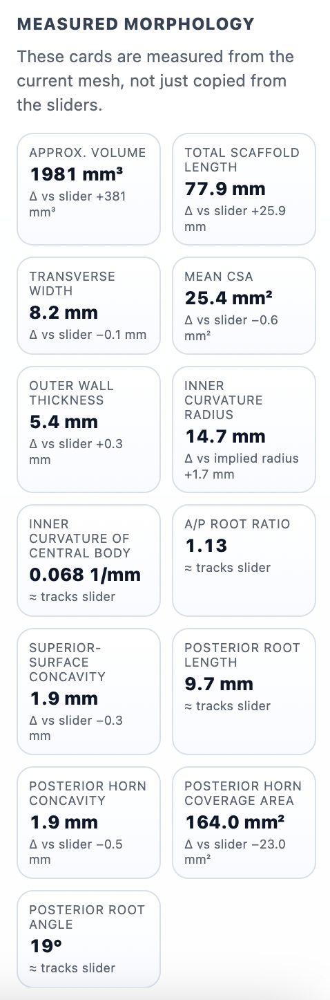
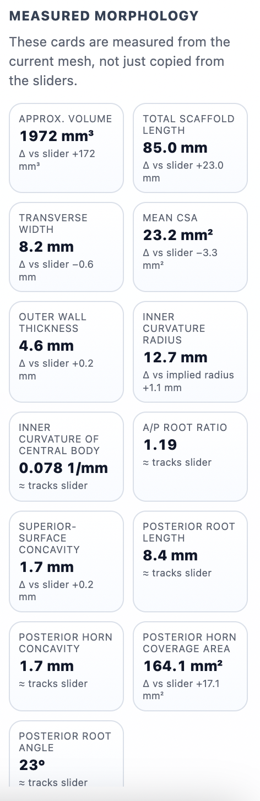

macOS
Universal installer package for Apple Silicon and Intel Macs.
Download for macOSWaiting for release metadata...
mat-planner.org
This site is dedicated to one job: helping you download the latest MAT Planner desktop build for your platform.
Choose your operating system. If a direct installer is not available, use the full release page link.
Universal installer package for Apple Silicon and Intel Macs.
Download for macOSWaiting for release metadata...
Windows desktop installer for x64 systems.
Download for WindowsWaiting for release metadata...
MAT Planner supports measured morphology review and planning workflows in a desktop-first interface.

